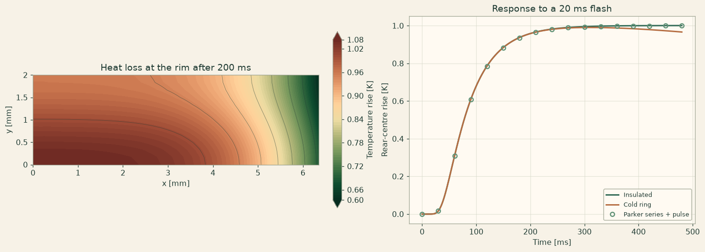
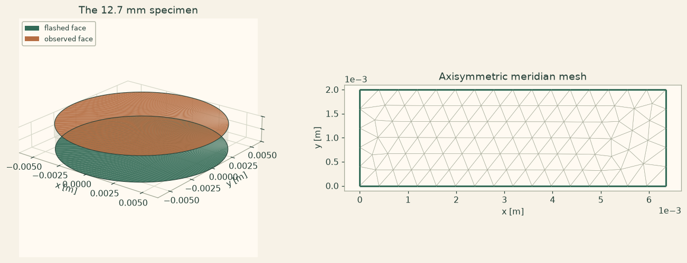

Docs › Examples › Measuring thermal conductivity with a laser flash
Transient heat conduction · 2D-axisymmetric
Measuring thermal conductivity with a laser flash
A 20 ms flash heats one face of a 12.7 mm disc. Measure the response on the other face and see how a cold sample holder changes the inferred conductivity.
Run locally with OneSimulation. The example downloads are free. Running them requires an activated runtime. Runtime Alpha 0.2.1a8 · CPython 3.13 on macOS (Apple Silicon), Ubuntu 22.04 (x86-64), and Windows x64. Installation and activation · View pilot plans. Scope of the reference checks.

What it computes
The STEP disc supplies the meridian for a quadratic axisymmetric heat model. A raised-cosine surface flux excites the insulated and rim-cooled mountings. The insulated rear-centre signal is checked against the Fourier series integrated over the pulse.
What it checks
For a specimen with conductivity 20 W/(m K), the half-rise gives 19.974 W/(m K) in the insulated mounting and 20.130 W/(m K) with the cold ring. The maximum insulated rear-face discrepancy is 0.0012 K for a nominal 1 K rise.
Geometry
Save the STEP file flash_method_axisymmetric.step next to the notebook before running it.

The geometry script
The script flash_method_axisymmetric_geometry.py builds the geometry with the CAD objects of OneSimulation and writes the file. Change a dimension there, run it, and run the notebook again.
"""Geometry of the OneSimulation example "Laser-flash method on a coin-shaped sample".
Builds the ceramic disc, 12.7 mm in diameter and 2 mm thick, with the CAD objects of OneSimulation
and writes flash_method_axisymmetric.step. The flashed face is named front, the observed face rear
and the cylindrical face rim.
"""
from onesim.cad.d3 import Cylinder
disc = Cylinder(radius=6.35e-3, length=2.0e-3)
faces = disc.boundaries
disc = disc.grouped(front=faces.bottom, rear=faces.top, rim=faces.outer_wall)
disc.save("flash_method_axisymmetric.step")The notebook
The complete notebook, cell by cell. Run it to produce the figures and the comparison printout.
Heat the front of a thin disc, then watch the back. For an insulated specimen after an instantaneous flash, the rear face reaches half of its final rise at \(t_{1/2}=0.1388 L^2/\alpha\). This experiment uses a finite pulse. We compare a freely suspended sample with a disc in thermal contact with a cold ring, then infer conductivity from their rear-centre signals.
import numpy as np
from onesim.cad.d3 import Box
from onesim.cad.exchange import load
from onesim.materials import IsotropicSolid
from onesim.meshing import TriangularMesher
from onesim.numerics import Numerics
from onesim.numerics.fem import FiniteElement, Lagrange, RevolvedH1SpaceFactory
from onesim.numerics.linear import SparseDirect
from onesim.numerics.time import BDF, BackwardEuler
from onesim.physics.heat_transfer import ConvectiveHeatFlux, HeatConduction, HeatFlux
from onesim.simulation import Problem, Simulation
from onesim.simulation.initial_conditions import InitialValue
from onesim.visualization import plots, theme
theme.set()The specimen and its meridian
A radial half-section of the STEP disc gives the computational domain. Rotating this section about the vertical axis weights each element by \(2\pi r\).
disc = load("flash_method_axisymmetric.step")
radius, thickness = disc.size[0] / 2, disc.size[2]
half = disc & Box(length=radius, width=2*radius, height=thickness, origin=(0, -radius, 0))
plane = half.section((0, 1, 0), origin=(0, 0, 0))
front = plane.select(edges=lambda e: all(abs(p[1]) < 1e-8 for p in e.points))
rim = plane.select(edges=lambda e: all(abs(p[0] - radius) < 1e-8 for p in e.points))
back_and_axis = plane.select(edges=lambda e: all(abs(p[1] - thickness) < 1e-8 for p in e.points) or all(abs(p[0]) < 1e-8 for p in e.points))
mesh = TriangularMesher(target_size=thickness / 5).generate(plane)
fig = plots.figure(1, 2, size=(12, 4.3))
plots.geometry(disc, selection={"flashed face": disc.boundaries.front, "observed face": disc.boundaries.rear},
camera=plots.Camera(elevation=22, azimuth=-52), labels=False, title="The 12.7 mm specimen", ax=fig[0])
plots.mesh(mesh, groups=("all",), legend=False, title="Axisymmetric meridian mesh", ax=fig[1])
plots.show()Flash the front face
A raised-cosine pulse with a duration of 20 ms deposits enough energy for a mean rise of 1 K. In the second mounting, a contact conductance of 6000 W/(m² K) carries heat from the rim into a holder at the initial temperature. The two flat faces are otherwise insulated.
rho, cp, conductivity = 2700.0, 900.0, 20.0
diffusivity = conductivity / (rho * cp)
duration, baseline = 0.020, 295.0
fluence = rho * cp * thickness * 1.0
def outward_flux(t):
return -2 * fluence / duration * np.sin(np.pi * np.clip(t / duration, 0, 1))**2
solid = IsotropicSolid(density=rho, specific_heat_capacity=cp, thermal_conductivity=conductivity,
youngs_modulus=70e9, poisson_ratio=0.30, thermal_expansion_coefficient=1e-5)
heat = HeatConduction(domain=plane.domain(), material=solid)
flash = HeatFlux(physics=heat, boundary=front, value=outward_flux)
insulation = HeatFlux(physics=heat, boundary=back_and_axis, value=0)
insulated_rim = HeatFlux(physics=heat, boundary=rim, value=0)
holder = ConvectiveHeatFlux(physics=heat, boundary=rim, heat_transfer_coefficient=6000, ambient_temperature=baseline)
numerics = Numerics(spatial=FiniteElement(element=Lagrange(order=2), provider=RevolvedH1SpaceFactory()),
time_integrator=BDF(order=2, startup=BackwardEuler()), linear_solver=SparseDirect())
fields, traces = {}, {}
for name, conditions in (("Insulated", (flash, insulation, insulated_rim)), ("Cold ring", (flash, insulation, holder))):
problem = Problem(name=name, geometry=plane, physics=(heat,), boundary_conditions=conditions,
initial_conditions=(InitialValue(heat.temperature, baseline),))
field = Simulation(problem=problem, mesh=mesh, numerics=numerics).run(
start_time=0.0, end_time=0.48, time_step=0.001).field(heat.temperature)
times, rear = field.time_series([[0, thickness]])
fields[name], traces[name] = field, rear.ravel() - baselineRead the rear-face trace
Compare the insulated solution with the Fourier series of Parker et al. (1961), averaged over the pulse. The inferred conductivity uses the interval from the pulse centroid to half the peak. It assumes negligible heat loss, so the cold-ring trace tests the effect of the fixture.
nodes, weights = np.polynomial.legendre.leggauss(24)
phase = (1 + nodes) / 2
lag = (times[:, None] - duration * phase) * diffusivity / thickness**2
modes = np.arange(1, 65)
series = 1 + 2 * np.sum((-1.)**modes * np.exp(-np.maximum(lag, 0)[:, :, None] * (np.pi * modes)**2), axis=2)
expected = np.where(lag > 0, series, 0) @ (weights * np.sin(np.pi * phase)**2)
print(f"Maximum insulated rear-face error: {np.max(np.abs(traces['Insulated'] - expected)):.4f} K")
for name, rise in traces.items():
peak = np.argmax(rise)
half_time = np.interp(rise[peak] / 2, rise[:peak + 1], times[:peak + 1])
estimate = 0.1388 * rho * cp * thickness**2 / (half_time - duration / 2)
print(f"{name}: peak {rise[peak]:.4f} K, half-rise {half_time*1000:.2f} ms, conductivity {estimate:.3f} W/(m K)")
fig = plots.figure(1, 2, size=(13, 4.6))
plots.surface(fields["Cold ring"], time=0.20, component=lambda value, point: value - baseline,
length_unit="mm", contours=8, label="Temperature rise [K]", title="Heat loss at the rim after 200 ms", ax=fig[0])
plots.line(y={k: (times*1000, v) for k, v in traces.items()}, points={"Parker series + pulse": (times[::30]*1000, expected[::30])},
xlabel="Time [ms]", ylabel="Rear-centre rise [K]", title="Response to a 20 ms flash", legend="lower right", ax=fig[1])
plots.show()